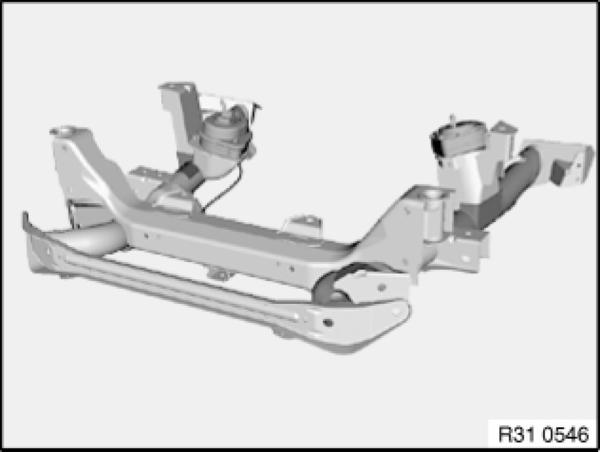

Replacing Front Axle Carrier
31 11 001 - Replacing front axle carrier

Warning!
Danger to life!
Secure engine in installation position to prevent it from falling down.

Necessary preliminary tasks:
- Disconnect battery negative lead Disconnecting and Connecting Battery Negative Lead
- Remove front wheels Removing or Installing Front or Rear Wheel
- Remove both tension struts from front axle carrier Removing and Installing/Replacing Left or Right Tension Strut
- Remove both control arms from front axle carrier Front Axle
- M47T2, N46: Remove left tie rod end from swivel bearing Replacing Left or Right Tie Rod
- M47T2, N46: Remove right tie rod from steering gear Replacing (Removing and Installing) Left or Right Tie Rod
- Disconnect pressure line for power steering from front axle carrier
- Remove stabilizer from front axle carrier Removing and Installing/Replacing Front Stabilizer and tie up
- Remove steering gear from front axle carrier Removing and Installing/Replacing Power Steering Gear and tie up

Lower front axle carrier and set down on a suitable surface.
Remove both engine mounts on front axle carrier and if necessary remove with vacuum lines from front axle carrier.
If necessary, remove stoneguard on left and right from front axle carrier.
Installation Note:
Use previous front axle carrier as a template for modifying or replacing small parts.
After installation:
- Perform chassis alignment check
- Carry out steering angle sensor adjustment Adjustments